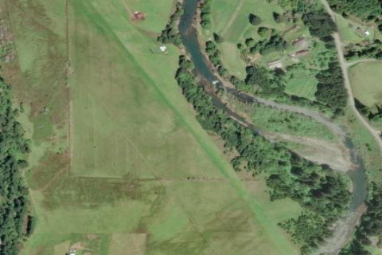

POWERS
6S6 · OR

Aerial imagery source: Esri, Vantor, Earthstar Geographics, and the GIS User Community
| Identifier | 6S6 |
|---|---|
| State | OR |
| Runway length | 2,500 ft |
| Runway width | 60 ft |
| Surface | TURF |
| Runway | 13/31 |
| Elevation | 326 ft |
| Ownership | public |
| CTAF | 122.9 |
| Coordinates | 42.86936111, -124.05902777 |
Notes
[shortfield] Location Overview Powers Airport (FAA identifier 6S6, sometimes called Powers State Airstrip) sits about a mile southeast of the small town of Powers in Coos County, in the heavily forested foothills of southern Oregon's coast range. The field sits at 326 feet elevation, nestled in a deep valley ringed by steep, high terrain on all sides, with the strip itself running directly alongside the Coquille River. Camping & Recreation Two mowed camping areas sit on the NE side of the runway, sometimes with portable toilets, sometimes without. Pilots are asked to sign the register at the NW end of the field, since the state uses it to track usage. The old trail down to the river has grown over, but there's a dirt road at midfield leading toward the water, with a bushwhack opening just off to the left; the north end of the runway may offer better river access, though private property signs should be respected. It's a short walk into the town of Powers for Jack's Diner and a small market/deli. There's little wind because the airport is nestled in a deep valley, and the surrounding land is private property, though locals have been known to welcome visiting pilots warmly, even bringing them firewood. Winter brings snow-capped peaks visible above the valley, and spring is generally the best season for the nearby river. Notes & Warnings This is a strictly VFR, fair-weather-pilot field — there are no published instrument procedures at 6S6. The single turf runway 13/31 is 2,500 by 60 feet, in good surface condition though with poorly marked thresholds, though pilots note that 60-foot figure only describes the mowed strip itself within a much larger open field, so the runway feels considerably wider in practice. Obstacle hazards are real: 45-foot trees 194 feet from the runway on the Runway 13 approach (4:1 slope to clear), and 12-foot trees just 45 feet off the Runway 31 end (3:1 slope to clear), with 25-foot trees within 35 feet of the centerline along the edge for the first 1,700 feet from the threshold. Official remarks warn the airport sits in a valley surrounded by high terrain, and that livestock and wildlife are present on and in the vicinity of the field. Despite this, pilots describe the approach as an easy, safe way to practice maneuvering in a valley below ridgetop level — the valley is wide, though it gives something of the sensation of a tighter canyon. Runway 31 with a left traffic pattern is preferred, but watch for sinking air just over the river ahead of the cliff-edge threshold. There's no control tower or fuel on field, just tiedown parking and a CTAF of 122.9. Summers can run brutally hot (around 100°F isn't unusual), so spring or fall visits are generally recommended. History Powers Airport has served the small timber town of Powers, Oregon since the early 1960s — it was activated in January 1961 — built primarily to give this remote coast-range community basic air access given its isolation in the mountains southeast of Coquille. It remains publicly owned and managed by the Port of Coquille River, the same port authority that oversees other small airfields in the watershed. Rather than evolving into a commercial or instrument-equipped facility, Powers has stayed a simple, unattended turf strip, which is precisely what's made it enduringly popular with backcountry and tailwheel pilots exploring the rugged, river-cut country of Oregon's southwest corner.